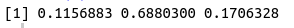

Using R function
In this section we'll see how to use functions in R
Step 1: Check about the function in help section. What arguments it takes.
So runif generates n random numbers between range min and max
Step 2: Use it accordingly
# setting a seed to make a random sample reproducible, choose any number you want
set.seed(65)# with argument name, exact argument order
runif(n = 9, min = 3, max= 6)
set.seed(65)# without argument name, exact argument order
runif(9,3,6)
set.seed(65)# with argument name, mixed argument order
runif(min = 3, max = 6, n= 9) set.seed(65)# without argument name, mixed argument order
runif(3,6,9) # this means n=3, max=9
set.seed(65)# using only the first argument. Took min=0 and max =1 by default
runif(3)
set.seed(65)# using arguments 1 and 3
runif(3,,4)